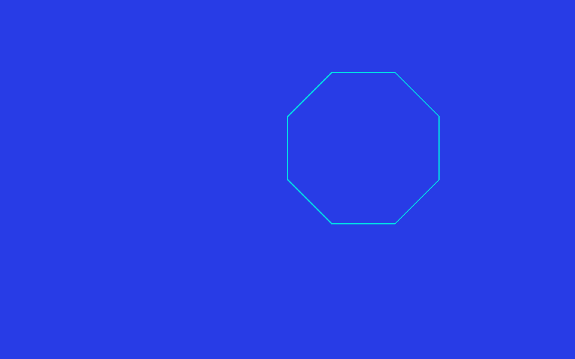
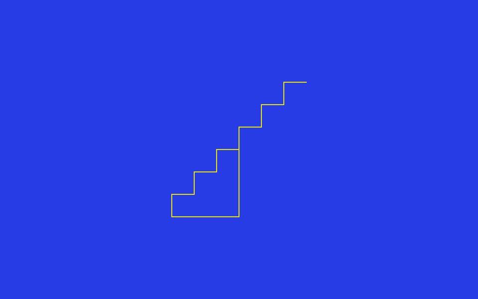
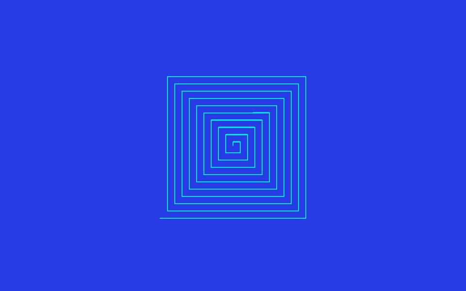
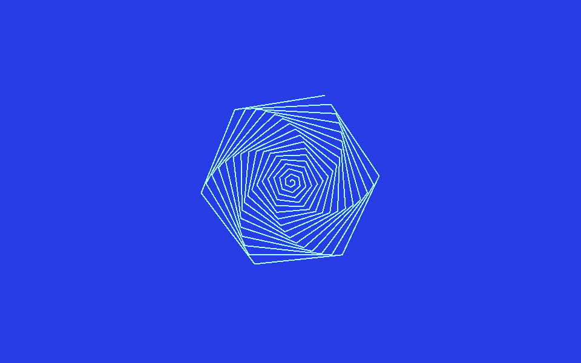
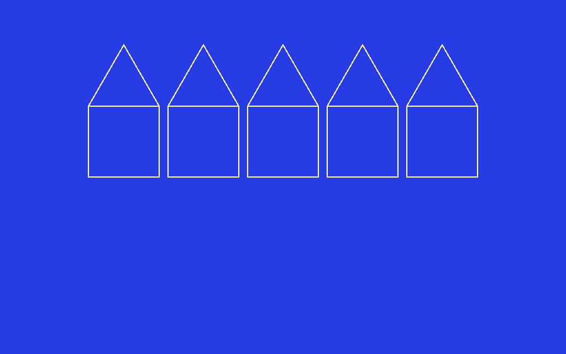
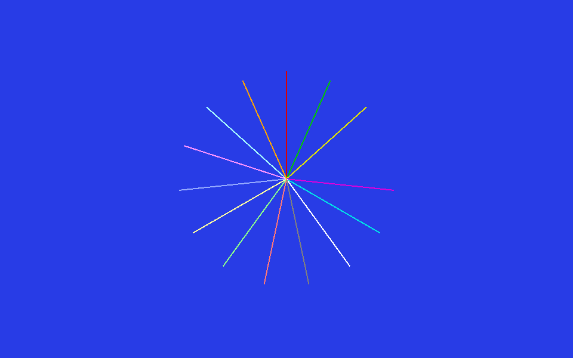
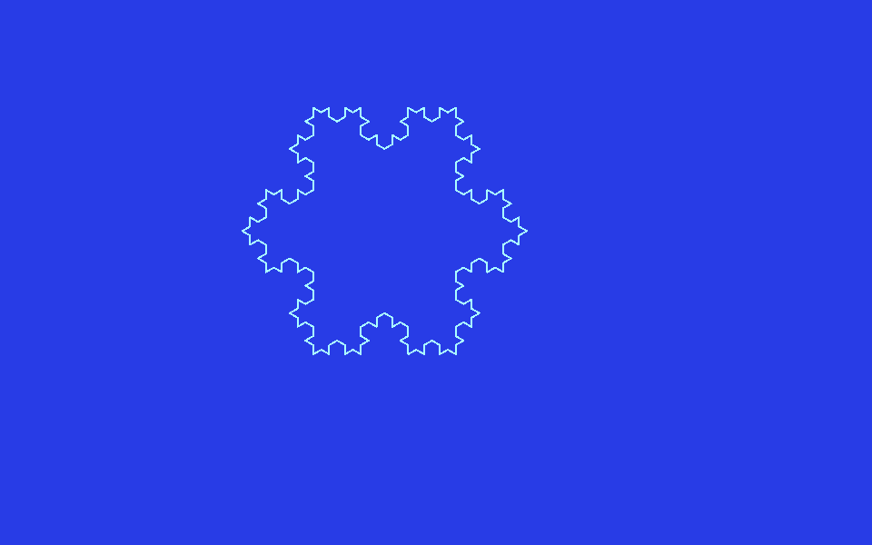

Programmes exemples
Des programmes à recopier, exécuter et modifier, du plus simple au plus élaboré
Tous les programmes de cette page ont été testés et fonctionnent. Recopiez-les
dans l'éditeur (ED), validez avec Ctrl+S, puis
appelez la procédure depuis le REPL. N'hésitez pas à changer les nombres pour voir
ce qui se passe, c'est la meilleure façon d'apprendre.
Figures de base
Le polygone universel
Une seule procédure pour tous les polygones réguliers : on donne le nombre de côtés et leur longueur. L'angle de virage est toujours 360 divisé par le nombre de côtés.
POUR POLYGONE :N :COTE
REPETE :N [ AV :COTE TD 360 / :N ]
FINEssayez : POLYGONE 3 100 (triangle), POLYGONE 5 80
(pentagone), POLYGONE 8 60 (octogone), POLYGONE 36 12
(presque un cercle).

POLYGONE 8 70 : un octogone régulier.
L'étoile
En tournant d'un angle plus grand que pour un polygone, le tracé se croise et forme une étoile :
POUR ETOILE :COTE
REPETE 5 [ AV :COTE TD 144 ]
FINREPETE 5 [ AV 150 TD 144 ] : l'étoile à cinq branches.
L'escalier
POUR MARCHE :H
AV :H TD 90 AV :H TG 90
FIN
POUR ESCALIER :N :H
REPETE :N [ MARCHE :H ]
FINAppelez ESCALIER 6 30. Remarquez comment ESCALIER
s'appuie sur MARCHE : on construit un gros programme à partir de
petites briques. C'est tout l'art de la programmation Logo.

ESCALIER 6 30 : six marches.
Rosaces & spirales
La rosace de carrés
On répète une figure en la faisant tourner un peu à chaque fois. Ici, 12 carrés espacés de 30 degrés (12 × 30 = 360, le tour complet) :
POUR CARRE :C
REPETE 4 [ AV :C TD 90 ]
FIN
POUR ROSACE
VE
REPETE 12 [ CARRE 80 TD 30 ]
FIN
ROSACE : douze carrés tournés de 30°.
La spirale carrée
À chaque tour, le côté grandit. On utilise COMPTEUR, qui donne le
numéro de l'itération en cours :
POUR SPIRALE
VE
REPETE 40 [ AV COMPTEUR * 5 TD 90 ]
FIN
SPIRALE : le côté grandit à chaque tour.
La spirale douce
En tournant d'un angle qui n'est pas un diviseur de 360, on obtient une spirale arrondie :
POUR SPIRO
VE
REPETE 100 [ AV COMPTEUR TD 59 ]
FIN
SPIRO : rosace obtenue avec un angle de 59°.
Le projet : dessiner une maison
Voici un projet complet, dans l'esprit du livre d'initiation au Logo : on dessine une maison en l'assemblant à partir de briques simples, un carré pour le mur, un triangle pour le toit.
POUR MUR
REPETE 4 [ AV 80 TD 90 ]
FIN
POUR TOIT
REPETE 3 [ AV 80 TD 120 ]
FIN
POUR MAISON
VE
MUR
AV 80 ; monte en haut du mur
TD 30 ; oriente pour le toit
TOIT
FINAppelez MAISON. Le secret est dans le placement : après avoir
tracé le mur, la tortue est revenue à son point de départ ; on la fait monter
le long du mur, on l'incline de 30 degrés, et le toit se pose pile dessus.
PORTE
et une procédure FENETRE, puis appelez-les depuis MAISON.
Pensez à lever le crayon (LC) pour déplacer la tortue sans tracer,
et à le rebaisser (BC) avant de dessiner.

MAISON : un mur carré surmonté d'un toit triangulaire.
Un village
Une fois le mur et le toit définis, on peut aligner plusieurs maisons pour former une rangée. Pour chaque maison, on trace le mur puis le toit, on revient au pied du mur, puis on lève le crayon pour se décaler vers la droite. On commence assez à gauche pour que toute la rangée tienne à l'écran :
POUR VILLAGE :N
VE
LC TG 90 AV 220 TD 90 BC ; place la tortue à gauche
REPETE :N [
MUR AV 80 TD 30 TOIT TG 30 RE 80 ; une maison (mur + toit)
LC TD 90 AV 90 TG 90 BC ; décale vers la droite
]
FINAppelez VILLAGE 5 pour cinq maisons côte à côte (jusqu'à cinq
tiennent à l'écran).

VILLAGE 5 : une rangée de maisons à toit.
Jouer avec les couleurs
Le ventilateur arc-en-ciel
On change la couleur du crayon à chaque branche en utilisant
COMPTEUR comme code de couleur :
POUR EVENTAIL
VE
REPETE 15 [ FCC COMPTEUR AV 120 RE 120 TD 24 ]
FIN
EVENTAIL : une branche par couleur de la palette.
Le carré plein
On trace un carré, puis on le remplit. FCR choisit la couleur de
remplissage, distincte de celle du contour. REMPLIS remplit la zone
qui contient la tortue : après avoir tracé le carré, la tortue
est revenue sur un coin, c'est-à-dire sur le trait. Il faut donc d'abord
l'amener à l'intérieur du carré, sinon le remplissage déborde au lieu
de colorier l'intérieur :
POUR CARRE_PLEIN
VE
FCC 7 ; contour blanc
FCR 1 ; remplissage rouge
REPETE 4 [ AV 80 TD 90 ]
LC AV 40 TD 90 AV 40 BC ; se placer à l'intérieur du carré
REMPLIS
FINFractales : la puissance de la récursion
Une procédure récursive s'appelle elle-même. C'est l'outil rêvé pour les dessins qui se répètent à toutes les échelles.
L'arbre
Un tronc, puis deux branches plus petites, qui se divisent à leur tour… jusqu'à ce que les branches deviennent trop courtes pour continuer.
POUR ARBRE :T
SI :T < 5 [ STOP ] ; arrêt quand la branche est trop petite
AV :T
TG 30 ARBRE :T * 0.7 ; branche de gauche
TD 60 ARBRE :T * 0.7 ; branche de droite
TG 30
RE :T ; revient au pied de la branche
FIN
POUR DESSINE_ARBRE
VE
FCAP 0
RE 100
ARBRE 60
FINChangez le 0.7 (taux de réduction) ou les angles pour obtenir des
arbres très différents.

DESSINE_ARBRE : chaque branche se divise en deux plus petites.
Le flocon de Koch
Chaque côté du flocon est remplacé par une ligne brisée, elle-même composée de lignes brisées plus petites :
POUR KOCH :L :N
SI :N = 0 [ AV :L STOP ]
KOCH :L / 3 :N - 1
TG 60
KOCH :L / 3 :N - 1
TD 120
KOCH :L / 3 :N - 1
TG 60
KOCH :L / 3 :N - 1
FIN
POUR FLOCON :N
VE
REPETE 3 [ KOCH 150 :N TD 120 ]
FINAppelez FLOCON 3. Essayez FLOCON 1, FLOCON 2,
FLOCON 4 pour voir le détail augmenter à chaque niveau.

FLOCON 3 : chaque côté est redécoupé trois fois.
Texte & calcul
La table de multiplication
POUR TABLE :N
REPETEPOUR [ I 1 10 ] [
( ECRIS :N "x :I "= :N * :I )
]
FINAppelez TABLE 7. La forme entre parenthèses
( ECRIS … ) permet d'écrire plusieurs éléments sur la même ligne,
séparés par une espace.
Compte à rebours récursif
POUR REBOURS :N
SI :N = 0 [ ECRIS "PARTEZ STOP ]
ECRIS :N
REBOURS :N - 1
FINCalculer une factorielle
Une opération récursive qui retourne un résultat avec RENDS :
POUR FACT :N
SI :N < 2 [ RENDS 1 ]
RENDS :N * FACT :N - 1
FINTestez avec ECRIS FACT 5 (qui affiche 120).
Un petit dialogue
On demande son prénom à l'utilisateur, puis on le salue :
POUR BONJOUR
LIS [ COMMENT T APPELLES-TU ] "NOM
( ECRIS "BONJOUR :NOM )
FINDécouper et recoller un mot
Un mot (une chaîne de caractères) se manipule avec quelques primitives de
base. Le mot littéral s'écrit avec un guillemet ouvrant :
"CHAT. Attention : les crochets [ ] font une
liste, pas un mot.
ECRIS PREM "CHAT
ECRIS DER "CHAT
ECRIS SP "CHAT
ECRIS COMPTE "CHAT
ECRIS MOT "BON "JOUR
ECRIS MAJUSCULE "chatAffiche tour à tour C (premier caractère), T
(dernier), HAT (sauf‑premier), 4 (le nombre de
caractères), BONJOUR (les deux mots collés) et CHAT.
Inverser un mot
En décomposant le mot caractère par caractère, on l'inverse par
récursivité : on colle le dernier caractère devant l'inversion du reste.
Le cas d'arrêt est le mot vide (").
POUR ENVERS :MOT
SI VIDE? :MOT [ RENDS " ]
RENDS MOT DER :MOT ENVERS SD :MOT
FINECRIS ENVERS "BONJOUR affiche RUOJNOB. (La primitive
INVERSE fait d'ailleurs ce travail directement.)
Compter les voyelles
On compte les voyelles du reste du mot, puis on ajoute 1 si le premier
caractère en fait partie. MEMBRE? teste l'appartenance à la liste
des voyelles :
POUR COMPTEVOYELLES :MOT
SI VIDE? :MOT [ RENDS 0 ]
LOCAL "RESTE
DONNE "RESTE COMPTEVOYELLES SP :MOT
SI MEMBRE? MAJUSCULE PREM :MOT [ A E I O U Y ] [ RENDS :RESTE + 1 ]
RENDS :RESTE
FINECRIS COMPTEVOYELLES "ANTICONSTITUTIONNEL affiche 8.
LOCAL.
La commande DONNE écrit une variable globale. Sans la
ligne LOCAL "RESTE, chaque appel récursif écraserait le
:RESTE des appels encore en attente : au retour, on relirait
une valeur corrompue et le compte serait faux. Règle d'or : toute
variable de travail d'une procédure récursive doit être déclarée
LOCAL. Le paramètre :MOT, lui, est déjà propre à
chaque appel automatiquement.
Reconnaître un palindrome
Un prédicat (il rend VRAI ou FAUX) : le mot est‑il égal à son
inverse, en ignorant la casse grâce à MAJUSCULE ? Il réutilise
la procédure ENVERS ci‑dessus.
POUR PALINDROME? :MOT
RENDS EGAL? MAJUSCULE :MOT ENVERS MAJUSCULE :MOT
FINSI PALINDROME? "Radar [ ECRIS [RADAR est un palindrome] ]
affiche bien le message.
Tableaux & tranches
Un tableau est une rangée de cases numérotées, comme une série de casiers alignés. Contrairement à une liste, on lit ou on modifie n'importe quelle case directement par son numéro, sans parcourir les autres : c'est rapide et bien pratique dès qu'on connaît le nombre d'éléments à l'avance (une grille de jeu, une liste de scores…). La 1re case porte le numéro 1.
Une tranche est un morceau découpé dans un mot, une liste ou un tableau : on donne la position de début et celle de fin, et on récupère juste ce passage — un peu comme couper une tranche dans une miche de pain.
Un tableau de cases
Un tableau a des cases numérotées qu'on lit et modifie directement
(contrairement à une liste). On le crée avec TABLEAU, on range une
valeur avec FIXEITEM et on la relit avec ITEM.
POUR CARRES
DONNE "T TABLEAU 5
REPETEPOUR [ I 1 5 ] [ FIXEITEM :I :T :I * :I ]
REPETEPOUR [ I 1 5 ] [ ECRIS ITEM :I :T ]
FINCARRES range les carrés 1, 4, 9, 16, 25 dans le tableau puis les
affiche. Un tableau est partagé : DONNE "U :T ne le
copie pas, les deux noms désignent le même tableau (pour une vraie copie :
COPIETABLEAU).
Une grille à deux dimensions
TABLEAUMD crée un tableau à plusieurs dimensions, parfait pour une
grille de jeu. On atteint une case par sa liste d'indices [ ligne colonne ].
DONNE "G TABLEAUMD [ 3 3 ]
FIXEITEMMD [ 2 2 ] :G "X
ECRIS ITEMMD [ 2 2 ] :GAffiche X : la case (2, 2) de la grille.
Une pile
Une pile empile et dépile par le haut (dernier entré, premier sorti),
pratique pour les parcours. EMPILE et DEPILE agissent sur
une variable contenant une liste. (Pour une file d'attente : ENFILE
/ DEFILE.)
DONNE "P [ ]
EMPILE "P 1
EMPILE "P 2
ECRIS DEPILE "PAffiche 2 (le dernier empilé) ; il ne reste plus que
1 dans la pile.
Extraire une tranche
TRANCHE prend un morceau d'un mot, d'une liste ou d'un tableau,
des positions début à fin incluses (la 1re position est 1).
Avec un seul nombre entre parenthèses, on va jusqu'au bout.
ECRIS TRANCHE "bonjour 1 3
MONTRE TRANCHE [ A B C D E ] 2 4
ECRIS ( TRANCHE "bonjour 4 )Affiche bon, puis [B C D], puis jour.
Fichiers
GoLogo sait lire et écrire des fichiers texte sur le disque
(dans le dossier de travail). Le principe est toujours le même : on
ouvre un fichier, on en fait le « flux courant », et dès lors les
commandes habituelles travaillent dessus au lieu de l'écran ou du clavier
(ECRIS écrit dans le fichier, LISLIGNE y lit une ligne).
On termine toujours par FERME.
Écrire dans un fichier
On ouvre un fichier en écriture et on en fait le flux courant : dès lors,
ECRIS écrit dans le fichier au lieu de l'écran. Une liste vide
[ ] rebranche l'écran. On termine par FERME.
POUR SAUVE_SCORES
OUVREECRITURE "SCORES.TXT
FIXEECRITURE "SCORES.TXT
ECRIS [ Alice 100 ]
ECRIS [ Bob 80 ]
FIXEECRITURE [ ]
FERME "SCORES.TXT
FINRelire un fichier ligne par ligne
LISLIGNE rend la ligne suivante ; FINFICHIER? dit
s'il reste quelque chose. TANTQUE répète jusqu'au bout.
POUR LIRE_SCORES
OUVRELECTURE "SCORES.TXT
FIXELECTURE "SCORES.TXT
TANTQUE [ NON FINFICHIER? ] [ ECRIS LISLIGNE ]
FIXELECTURE [ ]
FERME "SCORES.TXT
FINAffiche les deux lignes écrites plus haut.
Charger tout un fichier d'un coup
Plus simple encore : FICHIERVERSTABLEAU charge un fichier texte
entier dans un tableau, une ligne par case (pas besoin d'ouvrir ni de fermer).
COMPTE donne le nombre de lignes pour itérer dessus.
POUR AFFICHE_FICHIER
DONNE "L FICHIERVERSTABLEAU "SCORES.TXT
REPETEPOUR [ I 1 COMPTE :L ] [ ECRIS ITEM :I :L ]
FINLa commande refuse un fichier binaire (image, exécutable…) : elle ne lit que du texte, pour ne pas afficher n'importe quoi.
Musique
La gamme
POUR GAMME
JOUE [ DO RE MI FA SOL LA SI ]
FINUne petite mélodie
POUR AU_CLAIR
TEMPO 8
JOUE [ DO DO DO RE MI ]
JOUE [ RE DO MI RE RE DO ]
FINDessiner en musique
On peut mêler graphisme et son : à chaque côté du polygone, on joue une note.
POUR CARRE_SONORE
VE
POURCHAQUE [ DO MI SOL DO ] [
JOUE :?
AV 80
TD 90
]
FINAu-delà de ces petits exemples, GoLogo est livré avec des programmes un peu plus complets (figures, images de synthèse, vrais petits jeux). Pour savoir comment les lister, les charger et les essayer, rendez-vous dans la prise en main, section « Explorer les exemples fournis ».
Et maintenant, à vous d'inventer vos propres programmes. Bon Logo !